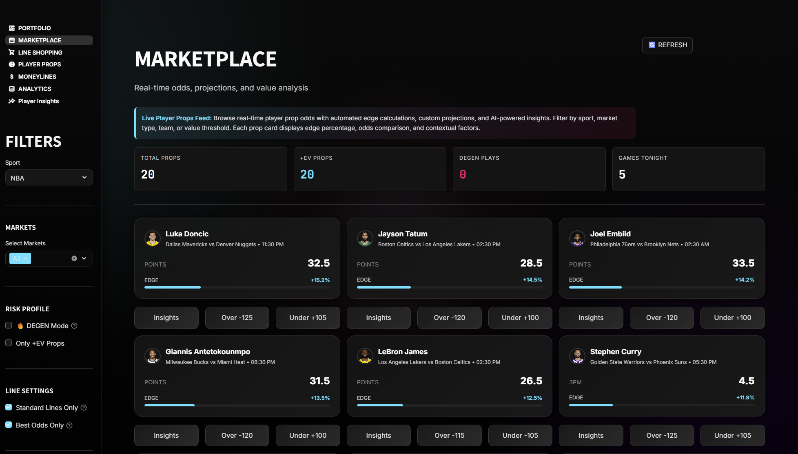

My Work
A collection of production-ready applications I've built, showcasing my expertise in full-stack development, mobile app creation, data analytics, and AI automation. Each project demonstrates real-world problem-solving and attention to detail.

ColorSpark
A mobile coloring app built with Flutter/Dart that combines creativity and early learning for kids. Features AI-generated coloring pages, interactive sticker tools, and a freemium subscription model. Led development from concept to beta testing.
Key Features
- AI-generated coloring pages for creative engagement
- Interactive sticker functionality (drag, resize, rotate)
- Custom category interface with animated space background
- Smooth horizontal scroll UX with dynamic category box sizing
- Freemium paywall system with VIP subscription logic
- Manual QA testing on emulators, physical devices, and web
- Responsive UI across web + mobile platforms
Technical Stack

Sports Betting Analytics Platform
A production-ready, full-stack analytics platform that aggregates real-time odds from 20+ sportsbooks, calculates expected value using ML models, and provides AI-powered betting insights. Features comprehensive error handling, fallback systems, and a premium UI/UX.
Key Features
- Real-time odds aggregation from 20+ sportsbooks
- ML-powered player performance projections
- Expected Value (EV) analysis and edge detection
- Context-aware AI insights (injuries, rest days, matchups)
- Multi-sport support (NBA, NFL, MLB, NHL, Esports)
- Premium UI/UX with animations and responsive design
- Production-ready with error handling and fallback systems
Technical Stack
Additional Screenshots
Custom GPT
Operations Automation Tool
Firehouse Subs Catering Prep Assistant
A custom-built AI tool designed and deployed for my restaurant business to streamline catering order preparation. This operations automation tool converts ezCater PDF tickets into clear, execution-ready prep instructions that follow Firehouse Subs Food Service Standards, eliminating manual calculations and preventing costly inventory mistakes.
Business Impact: This tool was actively used in my restaurant operations to improve accuracy, reduce prep time, and ensure consistent execution of high-volume catering orders.
The Problem
Catering orders often arrive as inconsistent PDFs that require managers to manually calculate meat, bread, cheese, and produce usage, interpret box lunch types (Lieutenant vs Rookie), avoid costly assumptions under time pressure, and translate order details into actionable prep steps. This process is error-prone, time-consuming, and difficult to audit.
The Solution
I designed a rules-enforced AI assistant that parses ezCater PDFs, applies Firehouse Subs catering build standards, calculates exact food usage by item and source, converts calculations into clear prep actions, generates full-case-only replenishment guidance, and stops to flag missing or ambiguous data instead of guessing. The output is written for a rushed Manager on Duty, not for engineers.
Key Capabilities
- PDF-based order intake (ezCater tickets)
- Accurate handling of Lieutenant vs Rookie box lunches
- Protein usage broken out by box lunches, combos, and platters
- Prep bag logic (4 lb / 2 lb standards) with overage visibility
- Bread validation by SKU (white, wheat, gluten-free)
- Cheese slice-to-pack conversion
- Beverage yield handling (tea, lemonade)
- Guardrails to prevent silent assumptions
What Makes It Different
Unlike generic AI tools, this GPT uses strict operational rules instead of approximations, refuses to proceed when required information is missing, prioritizes execution clarity over technical explanations, mirrors how experienced GMs actually prep catering orders, and is auditable and repeatable across orders. This is a practical operations tool, not a theoretical AI demo.
Example Output
Given an ezCater PDF, the assistant produces a clear order summary, a "What to Prep" section (bags, rolls, packs), a "What to Pull / Order" section (full cases only), and a final MOD checklist ready for execution.